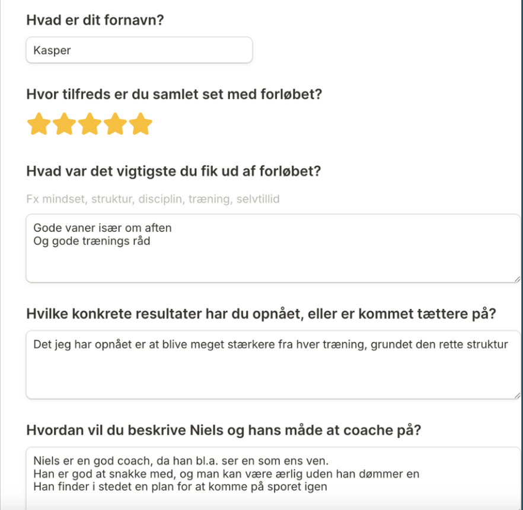
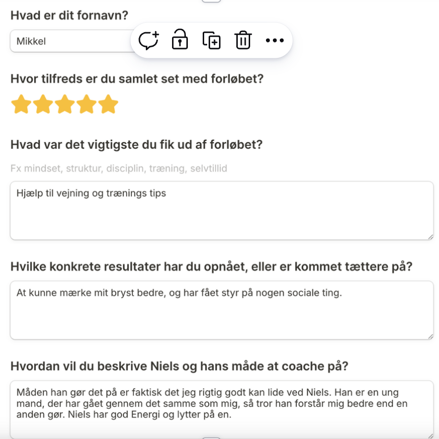
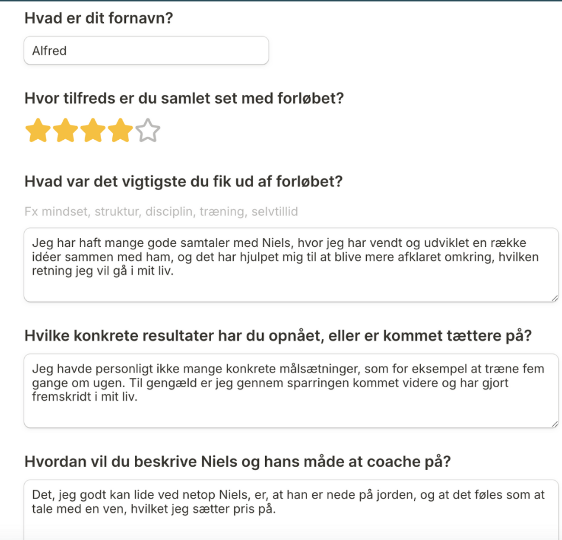

Nº 01
Ugentlig 1:1 coaching
Fast sparring, feedback og justering af din plan.

Et 12-ugers strukturforløb
Hvis dine dage sejler, og du spilder dit potentiale, hjælper jeg dig med at skabe momentum på 12 uger.

Stemmer fra forløbet
Hvad jeg tilbyder
Et konkret 1:1 forløb for dig, der godt ved hvad du burde gøre, men mangler et system, sparring og ansvar til at gøre det konsekvent.


Anmeldelser

Gode vaner især om aftenen og gode træningsråd.
Det jeg har opnået er at blive meget stærkere fra hver træning, grundet den rette struktur.
Niels er en god coach, da han bl.a. ser en som ens ven. Han er god at snakke med, og man kan være ærlig uden han dømmer en. Han finder i stedet en plan for at komme på sporet igen.

Hjælp til vejning og træningstips.
At kunne mærke mit bryst bedre, og har fået styr på nogen sociale ting.
Måden han gør det på er faktisk det jeg rigtig godt kan lide ved Niels. Han er en ung mand, der har gået gennem det samme som mig, så tror han forstår mig bedre end en anden gør. Niels har god energi og lytter på en.

Jeg har haft mange gode samtaler med Niels, hvor jeg har vendt og udviklet en række idéer sammen med ham, og det har hjulpet mig til at blive mere afklaret omkring, hvilken retning jeg vil gå i mit liv.
Jeg havde personligt ikke mange konkrete målsætninger, som for eksempel at træne fem gange om ugen. Til gengæld er jeg gennem sparringen kommet videre og har gjort fremskridt i mit liv.
Det, jeg godt kan lide ved netop Niels, er, at han er nede på jorden, og at det føles som at tale med en ven, hvilket jeg sætter pris på.
Gratis personlig strukturfeedback
Du svarer på fem korte spørgsmål. Jeg gennemgår din nuværende situation personligt og sender dig en kort lydbesked med, hvor jeg ville starte, hvis jeg var dig.
Du åbner et kort Tally-spørgeskema.
Gratis · Skræddersyet · Hjælp til struktur